RENNGESCHICHTE: DIE ULTRAMARATHONS, DIE DEN SPORT PRÄGEN
Entdecke die legendären Rennen, die den Ultralauf geprägt und Tausende dazu inspiriert haben, ihre Grenzen zu verschieben.
Manche Rennen haben den Sport selbst überschritten. Sie sind mehr als Wettkämpfe geworden – sie sind Pilgerorte für Ultraläufer, Bewährungsproben, bei denen Ruf gemacht oder verloren wird. Diese legendären Rennen verbinden extreme Schwierigkeit, ikonische Schauplätze und jahrzehntelange Geschichte. Ein solches Rennen zu gewinnen oder auch nur zu finishen, definiert eine Ultralauf-Karriere.

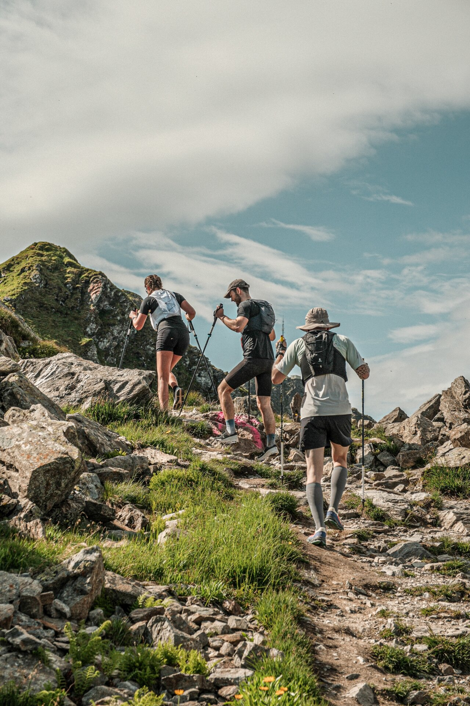

BEKANNTE RENNEN
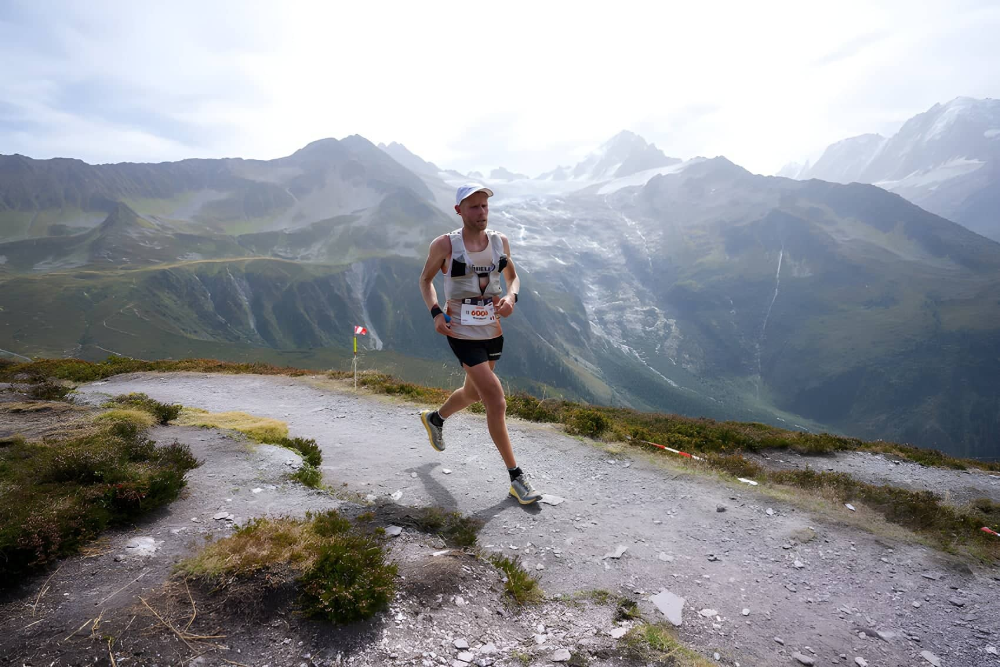
UTMB
- Ort
- Frankreich, Italien und Schweiz
- Distanz
- 168–170 Kilometer (104–106 Meilen)
- Höhenmeter
- 10.000+ Meter Anstieg
- Zeitlimit
- 46–47 Stunden
Besonderes: Kronjuwel der Trail-Ultramarathons. Erstmals 2003 ausgetragen.
MARATHON DES SABLES
- Ort
- Sahara, Marokko
- Distanz
- 250 Kilometer (155 Meilen)
- Höhenmeter
- minimal, extreme Hitze
- Zeitlimit
- 6 Kalendertage
Berühmtester Wüsten-Ultramarathon. Gegründet 1986, jährlich 1.500–2.000 Läufer aus über 60 Ländern.
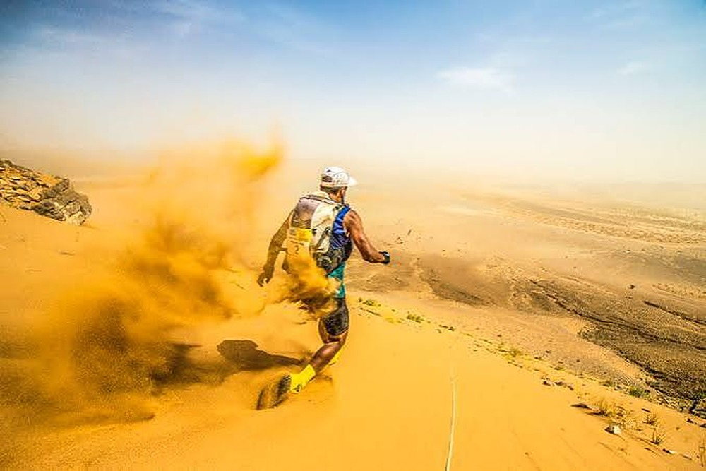
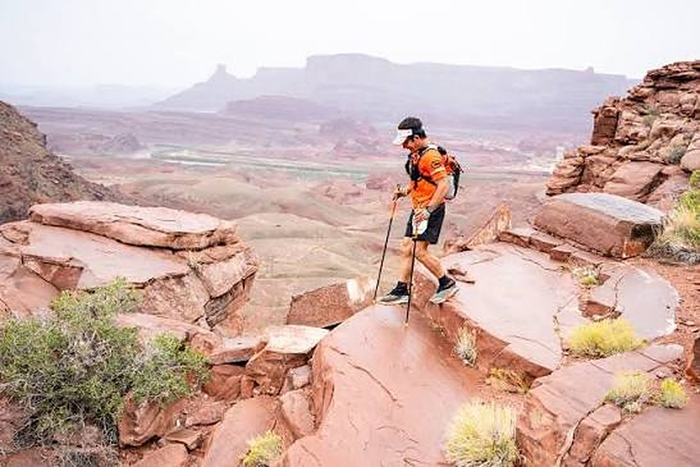
MOAB 240
- Ort
- Moab, Utah, USA
- Distanz
- 240 Meilen (386 Kilometer)
- Höhenmeter
- insgesamt 27.000 Fuß
- Zeitlimit
- 124 Stunden (5,17 Tage)
Einer der längsten und schwierigsten Ultras der Welt. Hohe DNF-Quote, begrenzt auf etwa 100–150 Teilnehmer.
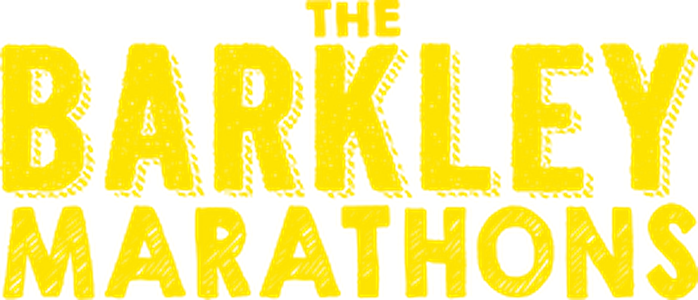
BARKLEY MARATHON
- Ort
- Tennessee, USA
- Distanz
- etwa 161 km, fünf Runden
- Höhenmeter
- ca. 16.500 bis 19.500 m gesamt (geschätzt)
- Zeitlimit
- 60 Stunden für 5 Runden (laut Blog)
Gegründet von Lazarus Lake (Gary Cantrell).

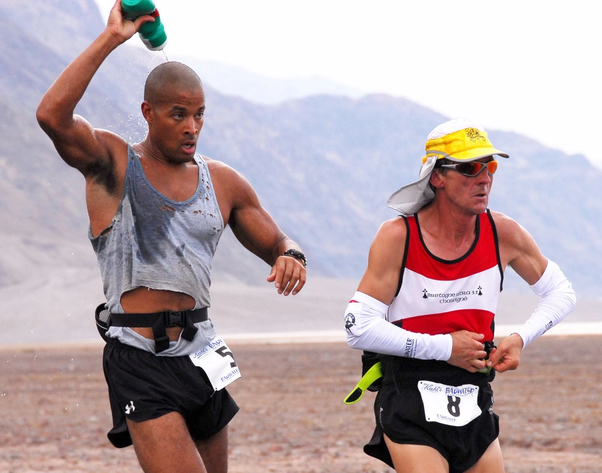
BADWATER ULTRAMARATHON
- Ort
- Lone Pine, Kalifornien
- Distanz
- 135 Meilen (217 km)
- Höhenmeter
- 14.600 ft (ca. 4.450 m), laut Veranstalter (Entwicklungsseite)
- Zeitlimit
- 45 Stunden
Harvey Lewis gewann zweimal. David Goggins wurde 2007 Dritter (25:49:40).
GO ONE MORE
- Ort
- Bare Ranch, Texas (laut Blog)
- Distanz
- 6,706 km pro Runde, kein fester Gesamtabstand
- Höhenmeter
- ca. 20 bis 40 m pro Runde (geschätzt)
- Zeitlimit
- Kein Gesamtzeitlimit, eine Runde pro Stunde
Der Go One More Ultra gilt als Elite-Race, weil dort extreme Wetterbedingungen wie Hagelstürme, Tornados und Temperaturen von bis zu 40 Grad herrschen.
Video zu Go One More ansehen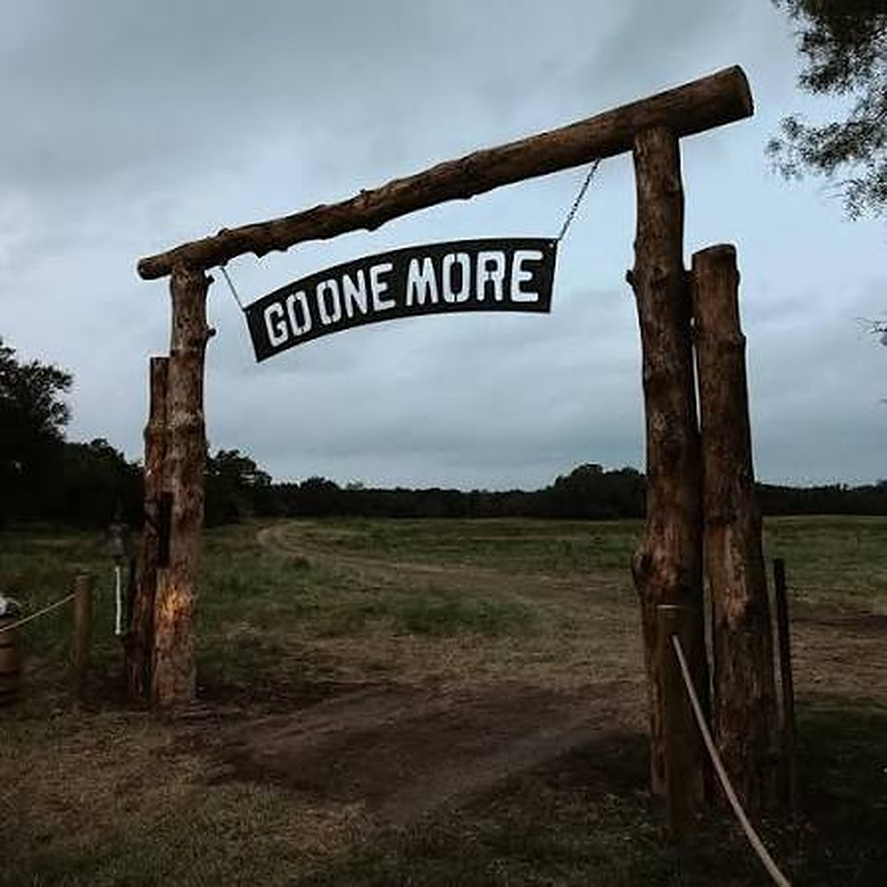
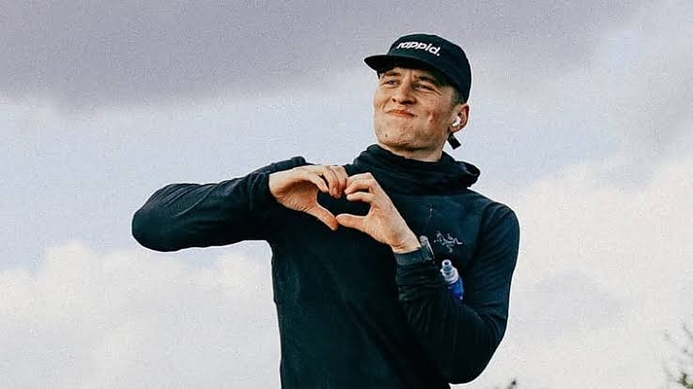
LAST SOUL ULTRA
- Ort
- Deutschland
- Distanz
- 6,706 km pro Runde, kein fester Gesamtabstand
- Höhenmeter
- ca. 30 bis 60 m pro Runde (geschätzt)
- Zeitlimit
- Kein Gesamtzeitlimit, eine Runde pro Stunde
2026 gewann Mark Dowdle mit 94 Runden (ca. 630 km), Zweiter wurde Another Ello.
Video zu Last Soul Ultra ansehenUTMB: rund um den Mont Blanc
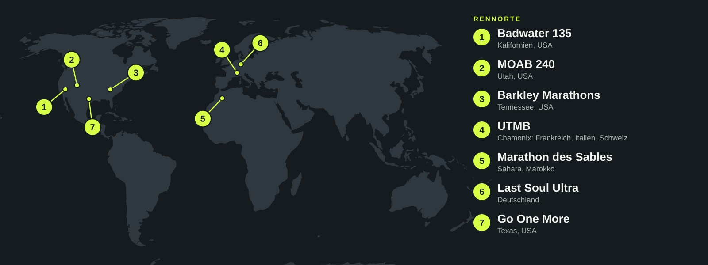
WUSSTEST DU?
Der UTMB hat ein Losverfahren mit nur 2.500 Plätzen für das Hauptrennen.
Teilnehmer des Marathon des Sables tragen während des gesamten Rennens mehr als 10 kg persönliche Vorräte mit sich.
Bei Big's Backyard Ultra haben Sieger Rekorde von über 60 Runden aufgestellt.
Western States 100 hat seit 1974 dasselbe 30-Stunden-Zeitlimit.
MOAB 240 hat eine höhere DNF-Quote als Treks zum Everest Base Camp.
Die schnellste Zeit beim UTMB liegt unter 20 Stunden; die langsamsten Finisher brauchen 46+ Stunden.
Diese legendären Rennen repräsentieren den Gipfel der Ultramarathon-Leistung. Jedes bietet einzigartige Herausforderungen und zieht Weltklasse-Athleten an. Ob dein Ziel ist, eines Tages an einem dieser Rennen teilzunehmen, oder einfach zu verstehen, was die besten Ultraläufer leisten – diese Veranstaltungen definieren, was menschliche Ausdauer leisten kann.